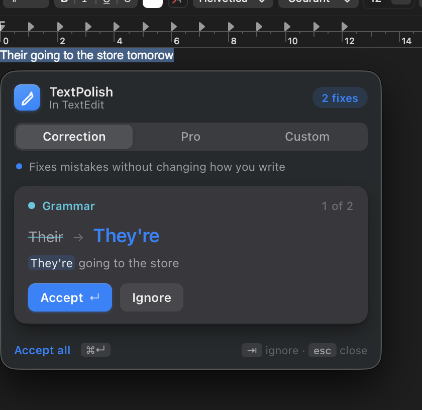
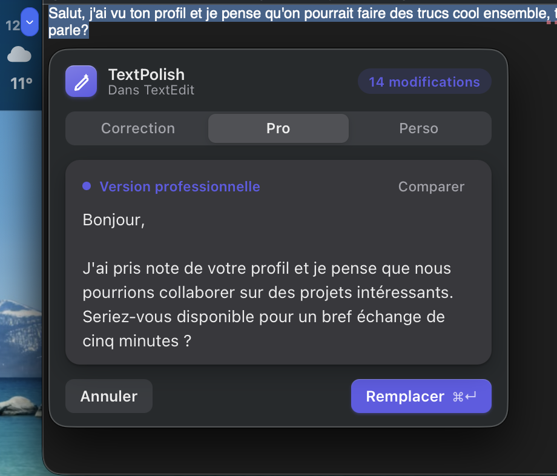
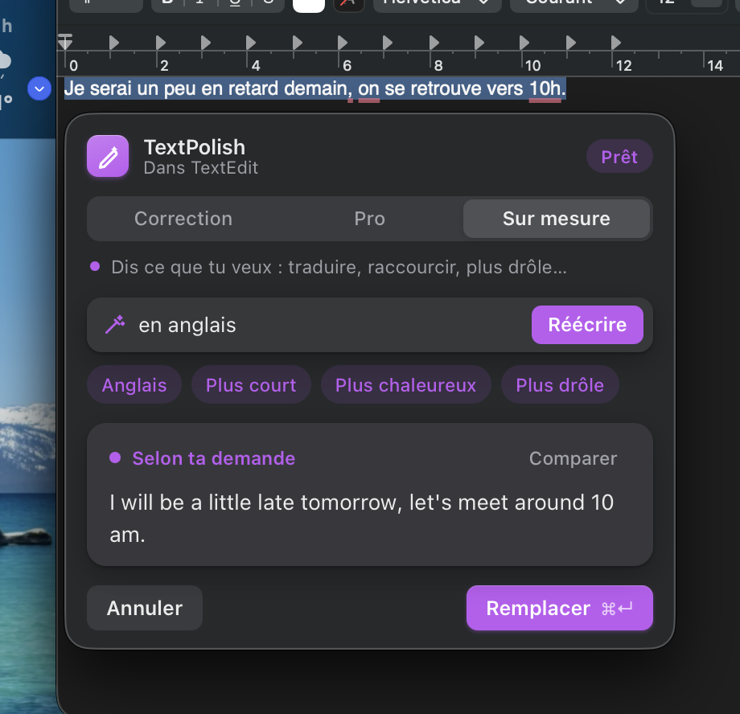
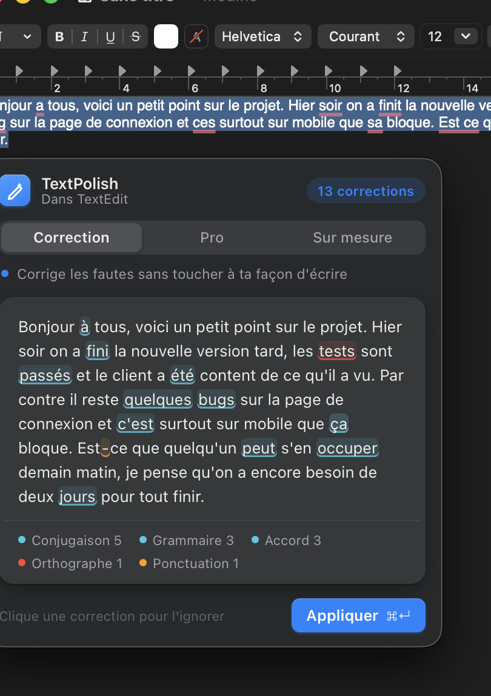
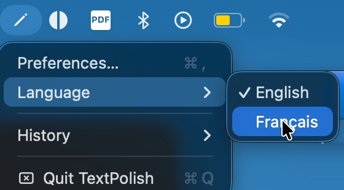

Select text in any Mac app, press ⌥⌘G, and fix it whitout without leaving the app. The language model runs on your Mac: nothing is sent online.
Real recordings of the app, in English then French. Only the typing is sped up (marked on screen); the stopwatch shows the real model time.
The popup opens on Correction and starts at once. Switching mode re-runs the same text.

Fixes mistakes only and keeps your words and tone. Short texts get one card per fix: ↵ accept, ⇥ ignore.

Rewrites the text for work: emails, reports, LinkedIn. Compare shows what changed.

Your own request: translate, shorten, warmer, funnier. Presets are one click away.
On a long message the popup switches to a document view: the whole text, each fix highlighted, and a legend that counts them. Click a fix to ignore it, ⌘↵ to apply the rest. A fix the app isn't sure about (a rewording, a removed comma, an informal word) is underlined in orange dashes and only applied if you click it.

TextPolish corrects and rewrites both languages; the model follows the language of the text, and Custom can translate between them. The interface itself is in English or French: pick one from the menu bar icon → Language and it is remembered.
Both were tested the same way, with expected answers: 98 % of 130 French messages and 96 % of 123 English ones corrected exactly as expected, and correct messages left alone. Fixes the app isn't sure about are shown, not applied.

17 models compared in six benchmark rounds on a MacBook Air M2 with 16 GB, then the chosen one tested in five more rounds on 802 test sentences and fine-tuned for the task in a twelfth. The last rounds score corrections against expected answers, including sentences with no mistake that must stay untouched.
of new sentences corrected right the first time
to correct or rewrite a sentence
doubtful fixes applied without your click
of your text leave your Mac
The model: benchmark, fine-tuning, before and after → · Benchmark report and raw outputs
Two specialized models meant a ~5 s reload at each mode switch on 16 GB. Gemma 4 E2B is good enough at all three, so switching adds no wait.
Keeping the model loaded holds 3.3 GB. TextPolish frees it after 5 minutes idle, so the next request waits 3–6 s. OLLAMA_KEEP_ALIVE changes the delay.
The MLX build answers in 0.34 s instead of about 0.9 s but needs ~7.4 GB and pushed this Mac into swap. It is the better pick with 24 GB or more.
Once loaded, the local model is about as fast as Gemini Flash-Lite (~0.5 s), and works offline with nothing leaving the Mac. The cost is the first-load wait and the RAM. TextPolish Cloud makes the opposite choice.
macOS's accessibility API doesn't give the caret position without a selection, and many apps (Slack, VS Code) don't expose their text well. A shortcut works everywhere.
A personal project to learn how to build an AI product end to end, and how to evaluate one honestly. So far it has mostly been used by me and measured with 1,002 test sentences; the one-command install is what makes testing with other people possible. What I worked on: a popup that adapts to the text, a model chosen by benchmark, safety over coverage (a wrong fix is worse than a missed one), test sets frozen before each change, and the model combined with grammar rules. The case study shows each decision and what it cost.
macOS 13 or later, Apple Silicon recommended. Paste this in Terminal:
curl -fsSL https://raw.githubusercontent.com/Enguerrand-Roques/textpolish/main/install.sh | bashOne command in Terminal installs what is missing (Python, Ollama) and opens the app. Its setup window then downloads the model (3.3 GB, once) with a progress bar, and takes you to the Accessibility permission with one button. No administrator password. Prefer to do it by hand? Step-by-step install · latest release · what changed in each version.
Then select text anywhere and press ⌥⌘G. TextPolish is built and tested for the Mac. A Windows version exists (Ctrl+Alt+G) with a simpler window; it is experimental and has not been tested since the redesign.